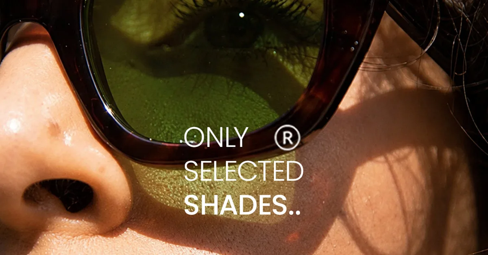
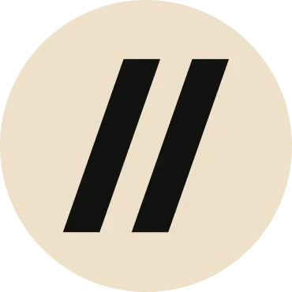
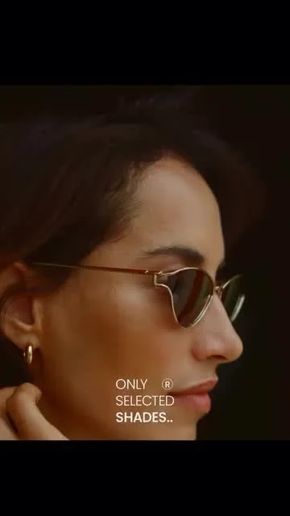
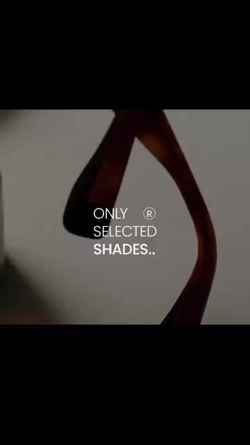
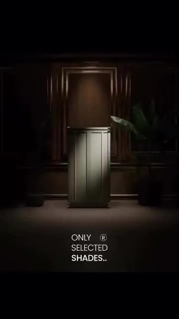
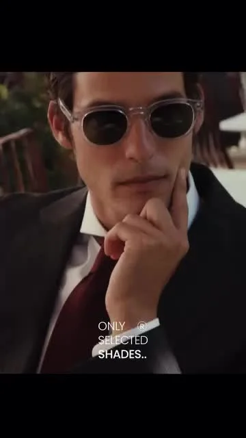
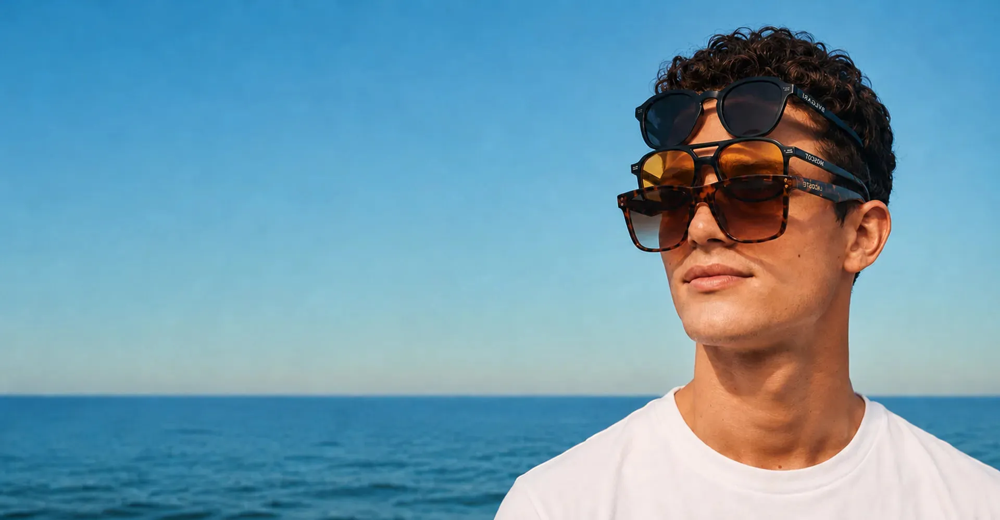
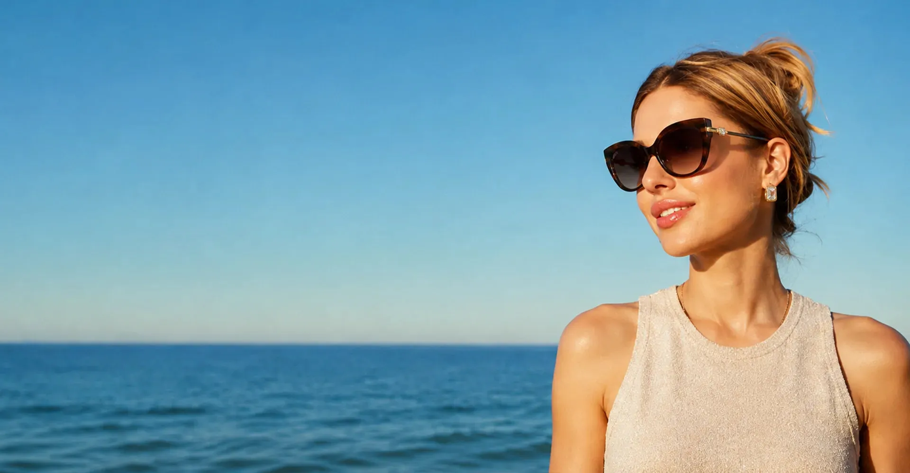
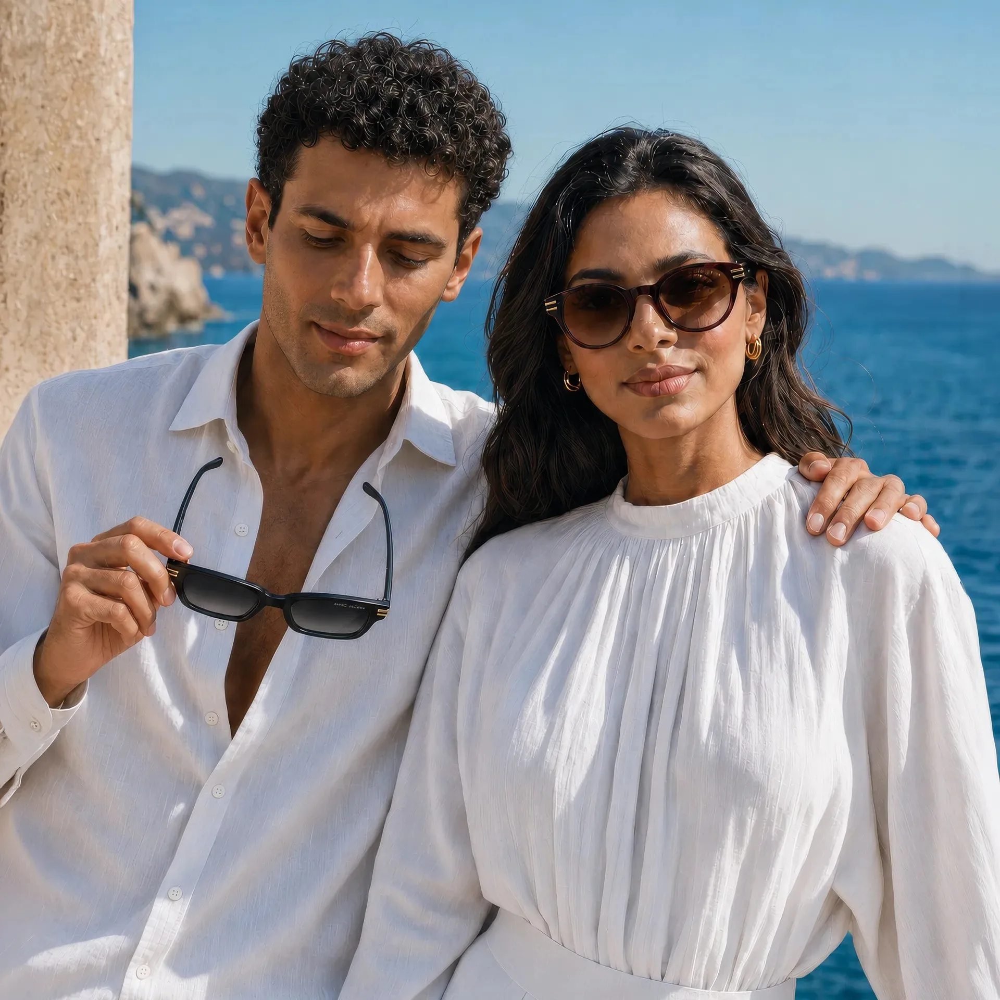

OnlyRSelected Shades..
A curator, not a rack
Remond sells one idea before it sells any frame: somebody already did the choosing. The identity keeps that promise quiet and absolute, one wordmark, one stamp, one line, set in coastal light and left alone.

01 · The wordmark
Six letters, two ideas
The wordmark is a wide-tracked geometric sans with two deliberate interruptions. The E loses its spine and becomes three horizontal bars. The O is a circle cut open by one vertical slit. Everything else stays classical, which is what makes the two moves read as design rather than decoration.

Bars and slits are the whole system. The three bars of the E and the single slit of the O generate everything else the brand does: the double-bar stamp, the slanted bar footers, the pauses in the layout grid. Our reading of the construction, not the designer's own account.
02 · The stamp
Two bars, cut loose
Lift two of the E's bars, tilt them to one shared angle, and the wordmark collapses into a mark that fits a circle. This is the version that signs avatars, favicons and small surfaces where six letters would turn to noise.

03 · Color
Sun, paper, ink, sea
The palette is the store's own: ink for type, the warm cream of the stamp's disc, lighter sands and sage for quiet surfaces, and a coastal blue that only ever arrives through the photography. Values sampled from the brand's published assets.
04 · Typography
One family, held lightly
The brand's store sets everything in Montserrat, and the identity follows: light weights, wide tracking, uppercase for anything that speaks. Weight never shouts; spacing does the talking.
Signature · light tracked caps
Montserrat at its lightest, letter-spaced wide, uppercase. The voice of the wordmark and of every headline the brand sets in type.
Body · regular, calm measure
Montserrat regular at reading sizes, generous line height, never bold for emphasis.
The signature line. It watermarks every reel, closes every post, and answers the only question a curator has to answer: why this frame. Because it was selected.
05 · In motion
Reels in the brand's light
Social content for Remond runs as short cinematic edits: film grain, slow coastal footage and curated product frames, each closed by the signature line. Four reels from July 2026, playing in the Highlights viewer.




06 · Imagery
Coastal, editorial, unhurried
Campaign photography keeps one horizon: blue sea, hard sun, skin and linen, frames as the only object in focus. Product sits inside that world rather than on a white packshot table. Images from the brand's own store.



Scope notes
- Documented on this page: the wordmark and its construction, the double-bar stamp, the working palette, the type system, the signature line, four social reels, and the campaign imagery direction.
- The wordmark, stamp and photography are the brand's own published assets, taken from its live store; no original vector files exist in the documented material.
- Colors are sampled pixel values; names like Stamp cream and Sea are descriptive, not official brand names.
- The type family is identified from the brand's own storefront stylesheets, which set everything in Montserrat; the specimens on this page are typeset in that family.
- The letterform reading and the bar-system interpretation are our study of the published artwork, not the identity designer's own account.
- The signature line "Only Selected Shades.." is quoted exactly as the brand publishes it, including the trailing dots.